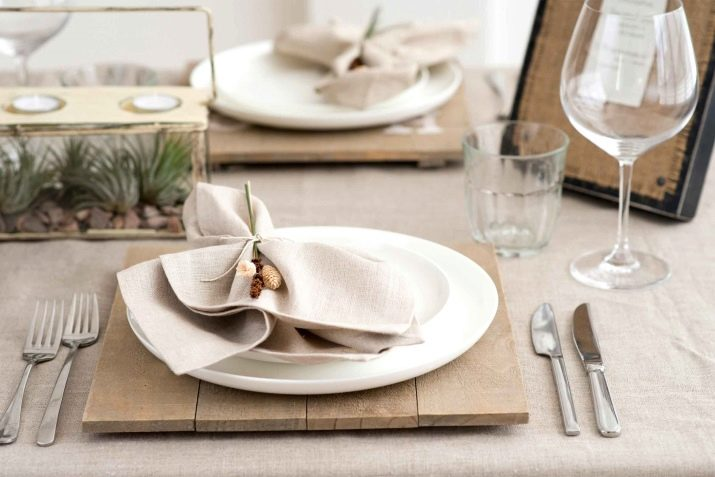
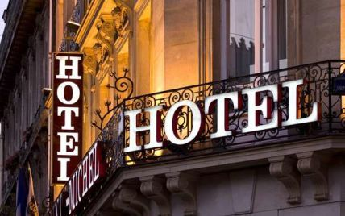
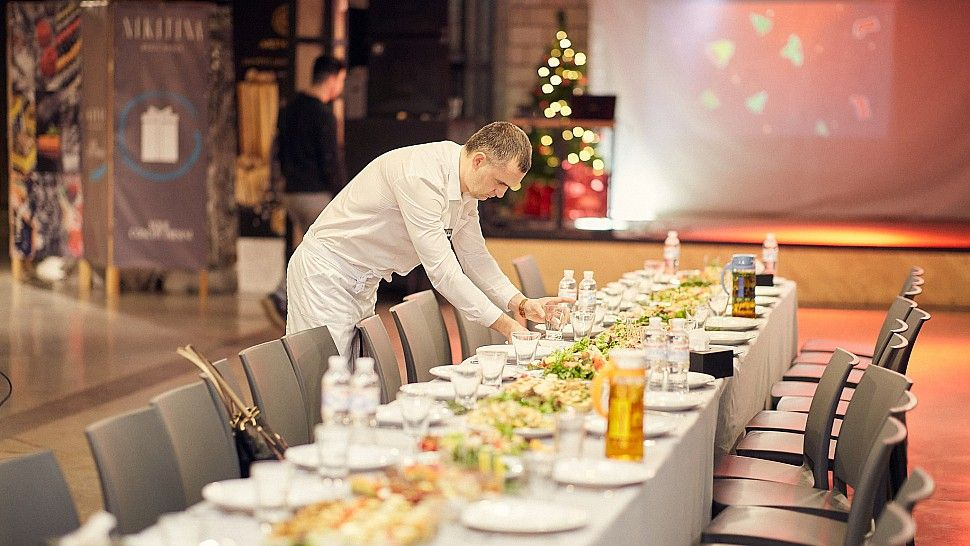

|
|
||
|

СЕРВІС ВИСОКОГО РІВНЯМи працюємо на радість своїм гостям уже не перший рік, і нашими головними перевагами залишаються першокласна кухня, вишуканість інтер`єрів та команда кращих професіоналів, що виконують свою роботу якісно, натхненно та креативно. Організація якісного бенкету складається із багатьох нюансів від вибору святкового меню до якісного обслуговування. І не важливо з ким Ви святкуватимете своє народження: з друзями, близькими чи колегами – найкращим центром дійства стане саме обраний Вами банкетний зал в Ramada Lviv. |
ВАШЕ ЗАДОВОЛЕННЯ – НАШ ПРІОРИТЕТ !Готель Modern – один із небагатьох молодих представників індустрії гостинності Львова, де ключову роль відіграє надання конференц-сервісу. Це ідеальне місце для проведення семінарів, конференцій, ділових перемовин, презентацій і корпоративних вечірок. Нашій команді професіоналів під силу забезпечити проведення заходу будь-якого формату – від найменшого з 10 осіб до масштабного з 500 осіб: тренінги, семінари, ділові зустрічі, презентації чи конференції. Навіть вибагливих гостей порадують просторі бенкетні зали для проведення визначних родинних і корпоративних заходів. Під кожен запит розроблено продумане до дрібниць меню кава-перерв, бенкетів, бізнес-ланчів, фуршетів.  |

ЧУДОВЕ МІСЦЕ ДЛЯ ПРОВЕДЕННЯ СВЯТВесілля, ювілей, день народження, корпоративний захід – не важливо, який привід для свята, але стовідсоткового задоволення без гастрономічної складової годі уявити! Ви можете обрати одну з бенкетних пропозицій, яку ретельно склали наші фахівці, а можете разом з нашим шеф-кухарем утілити в життя найсміливіші кулінарні фантазії: ми врахуємо всі побажання і накриємо стіл саме так, як хочете Ви. Крім того, розташування залів у готельно-ресторанному комплексі створюють додаткові переваги при плануванні та організації будь-якого урочистого заходу за будь-якої кількості гостей. Практично до всіх залів можна під’їхати автомобілем, більшість мають свою окрему інфраструктуру. |
Запрошуємо відвідати наші заклади. |
||